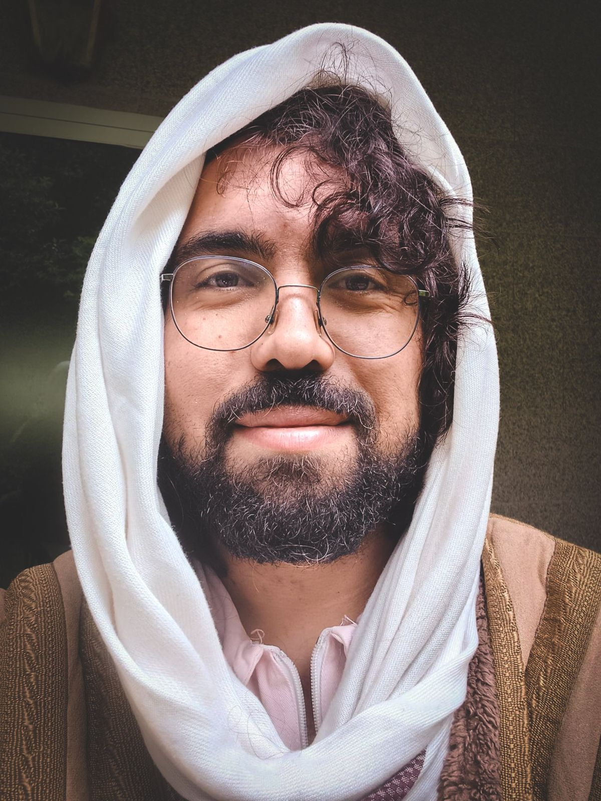

For twenty years I’ve asked what brings people together

Sharon Avraham he/him · lives between Portugal and Israel
I photograph to understand the world around me. I build things to allow people to meet. Belonging, for me, is an elusive particle: something we have forgotten and have to relearn in the reality we live in now. Almost everything I have made grows out of that search.
I call myself an artivist. I believe the job of art is to aim a sharp lens at life, at society and at the self, and to make a statement. I move between conceptual and documentary work.
Burning Man was a turning point for me. I saw a world where the line between art and the people around it blends, and where that inspiration draws people together. I came home and was part of the core team that created Midburn in 2011. I built and led its art department, and with a group of talented artists I formed Fugara, a collective that made interactive installations out of wood, metal and light and carried them beyond the burn.
For over a decade I developed my family’s farm in Ein Vered as a community lab. People came to make art, live together and learn how to run things themselves. It was the fertile ground that helped shape Midburn and Fugara, a place for meetings between Israelis and Palestinians, and a gathering place for people from all walks of life and from all around the world.
Since 2023 most of my work goes into shared life between Israelis and Palestinians. I’m one of the co-founders of ELHAM, The Day After, an NGO focused on grassroots initiatives between Israel and Palestine and across the Middle East as a whole. And the camera is always with me: in the field, in the office and on the stage.
Today I visit intentional communities with ToGather, a research project that asks people how they actually stay together, and I write about it almost every week. I design community life programs at the Arava Institute, together with Israelis, Palestinians and people from all around the world. And I help projects I’m aligned with share their story through social media.
What I talk about
- Cultural peace-building
- Creating cultural spaces
- The role of artivism in activism
- Community building
- Community research
- Israeli-Palestinian community building
- Intentional communities
- Building festivals as communities
Founded and co-founded
- 2011MidburnNGO, founding member and initiator
- 2012David's FarmCommunity lab, founder
- 2014FugaraArt collective and NGO, co-founder
- 2023ELHAM, The Day AfterNGO, one of 14 co-founders
- 2023ToGatherResearch project, founder